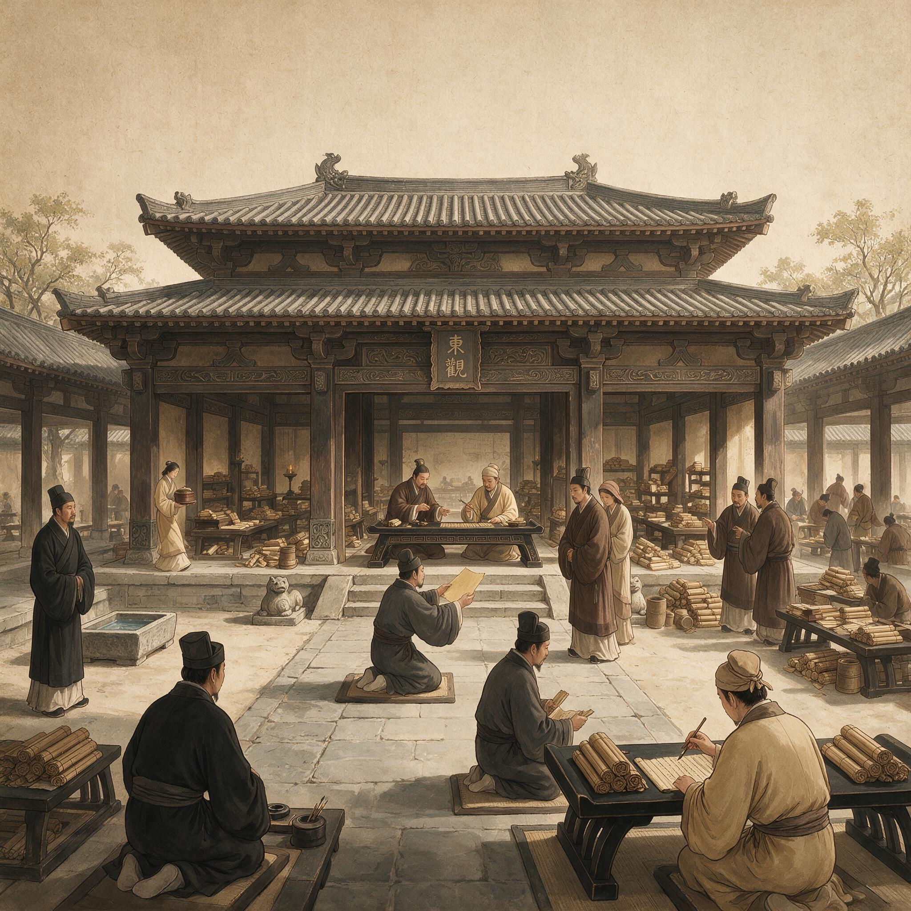

第 13 章
尚方纸入东观
元兴元年三月十七日，尚方令蔡伦的案头摊开着一份刚刚誊抄完毕的诏命副本。绢帛上“永为定式”四个字墨迹未干，下方罗列着他用三年时间调出的造纸规程——原料配比、浸泡时长、舂捣力度、抄纸手法、压榨时间、晾晒温度、施胶配方——全部被压扁成一段一段的隶书文字，工整，清晰。
据《后汉书·宦者列传》所载，自古书籍文档皆用竹简，后有缣帛，然“缣贵而简重，并不便于人”。蔡伦正是针对这“简重帛贵”的困局，改用树皮、破布、麻头和鱼网等廉价之物造纸，大大降低了成本。
他合上副本，将那一叠准备送往东观的纸样夹在腋下，走出门廊时，用拇指反复摩挲着最上面那张纸的右上角——那正是他亲手造出的、承载着“此物既成，不可复退”之决断的纸。
消息传得很快。元兴元年那份诏命颁下才不过三日，东观这边已经知道了全部内容——包括“永为定式”四个字。“正是。”蔡伦把纸样捧到刘珍面前。“尚方已制成楮皮纸若干，拟请东观校书郎试用。此

汉代东观阁复原图
AI 生成插图，非史实影像。
纸经施胶压光处理，墨迹附着良好，卷面平整，折叠不易断裂。”
他刻意选择了一套不带任何夸张修饰的描述性语言。“墨迹附着良好”——这是可以当场验证的事实。“卷面平整”——这是肉眼可见的外观。“折叠不易断裂”——这是可以立刻动手测试的物理性能。
他知道在刘珍这种人面前，任何形容词都是多余的甚至是有害的。“轻便”“廉价”“便于书写”——这些词在东观的语境里不是优点而是疑点。轻便意味着不够庄重。廉价意味着不够珍贵。便于书写意味着门槛降低——而知识门槛的降低对于垄断经学解释权的博士群体来说从来就不是一件值得欢迎的事。
刘珍没有立刻接过那叠纸。他先是从袖中取出一方素帛铺在石案上垫手——这是他的习惯动作，校勘珍贵版本时为了防止手上的汗渍沾染简牍，他总是先用帛垫手再触碰书册——然后才伸出手，用拇指和食指捏住最上面那张纸的一角，轻轻提了起来。纸在午后的阳光下呈现出一种温润的微黄色泽。那是楮皮纤维本身的颜色加上明矾胶液处理后产生的色调，不像缣帛那样洁白刺目，也不像旧竹简那样灰暗沉闷。
刘珍把纸举到与视线平齐的位置，借着阳光观察纸面的纤维分布。蔡伦没有说话。他知道这一刻不需要说话。纸本身会说话——或者说，纸本身会用它的质地、色泽、平整度和透光均匀度向一个经验丰富的校书者传递信息。
刘珍的手指正在读取这些信息：纸面是否有疙瘩？纤维是否分布均匀？透光时是否有厚薄不一的暗斑？这些都是一个常年与各种书写材料打交道的人能够在几息之内判断出来的。
刘珍看了大约十息，然后把纸放回石案上，用手指在纸面上轻轻抚摸了一下——从左到右，沿着抄纸时纤维自然排列的方向。“纤维走向一致，”他说，语气仍然是不高不低的陈述，“表面有细微绒感。”他顿了一下，抬起眼看着蔡伦，“此绒感是否会影响小字注疏的笔画清晰度？”
来了。第一个问题就是小字注疏。蔡伦当然知道这意味着什么。东观校书工作中最重要也最繁重的一个环节就是在经文行间添加注疏小字——那些小字通常只有正文的三分之一甚至五分之一大小，需要用极细的笔锋在有限的空间内写出清晰可辨的笔画。竹简上写小字注疏是一件考验眼力和腕力的活计：竹纹会干扰细笔锋的走向，稍有不慎就会让笔画边缘发毛。
缣帛上写小字则相对容易，但缣帛昂贵，通常只用于誊抄最终的定本，不会在校勘过程中大量使用。而纸面那层微细的纤维绒感会不会在书写小字时造成笔画洇散或边缘模糊？这是一个完全合理的技术问题，也是一个只有真正从事过校书工作的人才会提出的问题。
“请刘大夫当场试笔。”蔡伦说。他从袖中取出一支随身携带的小楷笔和一方小墨，放在石案上。刘珍看了那支笔一眼，没有接。他从自己的笔匣中取出惯用的那支竹管狼毫笔——那是他校书二十年来一直在用的笔，笔杆已经被手指磨出了光滑的凹痕，笔锋因为长期使用而呈现出一种只有大量书写才能形成的自然弧度。
这是另一种测试。蔡伦立刻明白了。刘珍要用自己的笔、自己的墨、自己的运笔习惯来测试这张纸——而不是用蔡伦专门调校过的工具。
因为东观的校书郎们不会为了迁就一种新材料而改变自己几十年形成的书写习惯。如果纸要进入东观，那就必须是纸来适应人，而不是人去适应纸。这是一个完全合理的立场。也是一个残酷的立场。
刘珍开始磨墨。他磨墨的动作缓慢而有节奏，墨锭在砚台上转圈的次数和力度都是多年养成的固定习惯——这个习惯决定了墨汁的浓度和胶性，而这个浓度和胶性又反过来决定了他书写时对纸面吸墨速度的预期。如果他发现这张纸的吸墨速度与他习惯的墨汁浓度不匹配，他就会皱眉头。
墨磨好了。刘珍用笔锋蘸墨，在砚台上舔了舔笔尖，然后悬腕落笔。他写的是《尚书·尧典》的开篇第一句：“曰若稽古帝尧。”
六个字，每个字约莫拇指指甲盖大小，笔画结构紧凑，横平竖直，撇捺分明。这是标准的汉隶校书体——不是用于正式誊抄的八分书，而是校书郎们在简牍上做注疏时使用的实用隶书，笔画更细，结构更密，讲究的是在有限空间内容纳尽可能多的清晰笔画。
笔锋落在纸面上的那一刻，蔡伦看见刘珍的手腕微微顿了一下。那是阻力感。纸张表面的施胶层与刘珍惯用的竹简表面有着不同的摩擦系数。竹简表面光滑但带有竹纹的微起伏，狼毫笔锋在上面行走时会有一种被纹理轻轻引导的感觉；而纸面的阻力是均匀的、绵密的，没有方向性的纹理引导，笔锋需要依靠手腕本身的力量来控制走向。这个差异对于第一次在纸上写字的人来说是一种微妙但不可忽视的不适感——就像一个人走惯了一条路面有规律起伏的石板路，忽然走上一条完全平坦的夯土路，脚底反而会觉得不踏实。
但刘珍的手腕只顿了一下，然后迅速调整了运笔力度，剩下的五个字一气呵成。他放下笔，低头看自己写下的那六个字。蔡伦也低头看那六个字。
墨迹在纸面上均匀铺开，笔画边缘干净利落，没有洇散，没有发毛。横笔收锋处没有出现竹简上常见的因纹理干扰而产生的微小锯齿。竖笔的起笔顿点清晰饱满——因为纸面的吸墨速度比竹简略快但比缣帛略慢，恰好让墨汁在笔画成形之前不至于过度洇开，也不至于因为吸墨太慢而导致笔画中断墨色不匀。
刘珍盯着那六个字看了很久——比看纸面纤维分布的时间更长。然后他伸出手指，在那六个字的笔画上轻轻蹭了一下。墨迹已经完全干透，手指蹭过时没有留下任何污痕。“吸墨速度比竹简快，”他说，声音里带上了一种蔡伦从未听过的语调——不是赞赏，不是批评，而是一种被激发了好奇心的探究欲，“但墨迹干涸后与纤维结合紧密，不易蹭落。”他抬起眼看着蔡伦，“你在纸面施了什么？”
“明矾水配以少量米浆，”蔡伦说，“涂布后半干时以棕刷压光三遍。”
“米浆。”刘珍重复了一遍这个词，像是在咀嚼它的含义。“米浆含淀粉，日久会不会生虫？”
第二个问题。日久生虫。这也是一个完全合理的问题。东观藏有大量需要长期甚至永久保存的档案文书。《东观汉记》的编纂工作已经持续了数十年，那些已经写成的部分需要在档案库里存放几十年乃至上百年。如果纸张因为含有淀粉成分而招引蠹虫，那么这种材料就绝对不能用于重要文献的保存——无论它有多轻便多便宜多好写。“明矾有杀虫之效，”蔡伦说，“且米浆用量极少，仅为增加纸面光泽与柔韧度，非以淀粉黏合纤维。”他顿了一下，又补充道：“尚方已做过蠹虫试验。取成纸置于蠹虫箱中三月，未见蛀蚀。”
这句话他说得很平静，但他知道这是今天最关键的一句话。蠹虫试验不是朝廷规定的标准检测项目。没有任何官署要求尚方令必须对新材料进行蠹虫试验。是他自己做的。三年前他开始研制纸张时就已经想到了这个问题——不是因为他有先见之明，而是因为他是铁官家庭出身，从小就知道铁器要过锈蚀试验、木器要过虫蛀试验、皮革要过腐化试验。任何一种声称自己能够“长期使用”的材料都必须先证明自己能够“长期存在”。这是工匠的本能，不是官员的本能。而此刻这个本能在东观的石案前替他挡住了一个致命的问题。
刘珍听完这句话后沉默了几息，然后点了点头——不是那种礼节性的点头，而是一种接受了有效证据之后的认可性点头，下巴下沉的幅度比礼节性点头更大更慢，带着一种“这个回答超出了我的预期”的分量感。“三月未见蛀蚀，”他说，“不足以证十年百年。”但他紧接着又说：“不过可以作为初步凭据。”
初步凭据。这个词意味着刘珍已经把纸张纳入了可以认真考虑是否用于东观校书工作的候选材料范围——不是当作好奇的新鲜玩意，不是当作皇帝诏命强制推行的政治任务，而是当作一个需要用专业标准去检验的技术选项。这正是蔡伦今天想要达到的目标。
他不是来让东观的校书郎们立刻放弃竹简改用纸张的。那种一步到位的想法只存在于不懂行的人的想象中。他知道要让纸张真正进入东观的知识生产流程，必须经历一个漫长的、反复的、充满挑剔和质疑的检验过程——而这个过程的第一步不是让校书郎们“喜欢”纸张，而是让他们“认真对待”纸张。
喜欢是一种情绪。情绪会变。认真对待是一种态度。态度一旦形成就不会轻易改变——因为认真对待意味着投入了时间和注意力去检验和判断，而人对自己投入了注意力的东西天然会产生一种不愿轻易否定的心理倾向。这是他在宫廷里待了二十年学到的东西之一：改变一个人的看法最有效的方式不是让他立刻同意你，而是让他愿意花时间去检验你。
“请刘大夫将这批纸样留用，”蔡伦说，“分与诸位校书郎日常试用。无论优劣，恳请据实记录使用体验，以便尚方进一步改进工艺。”
他把姿态放得很低。“据实记录”——不是请他们说好话。“进一步改进”——意味着承认现在的纸张还不够完美，还需要根据使用者的反馈进行调整。“恳请”——不是要求，不是命令，不是借着皇帝诏命的权威来施压。
刘珍看了他一眼。这一眼的时间不长，但蔡伦从这一眼中读出了一层以前从未在东观校书郎们的眼中读到过的东西：不是对尚方令这个官职的礼貌性尊重，不是对宦官身份的本能性疏远，而是一个专业人士对另一个专业人士的平等审视——就像一个好的铁匠在打量另一个好的铁匠打出的刀时的那种目光，不涉及身份高低，只关乎手艺好坏。“可。”刘珍说了一个字。
然后他做了一件出乎蔡伦意料的事。他把那叠纸样分成两份，一份留给自己，另一份递给身后侍立的书吏，吩咐道：“送与校书堂东阁，请贾大夫试用。”
贾大夫。贾逵的侄孙贾文则，东观校书郎中的少壮派领袖，以精通《古文尚书》和《左氏春秋》著称，今年不过三十出头，却已经被公认为下一代经学传承的核心人物之一。他的意见在东观的年轻一代校书郎中有很大的影响力。
刘珍把一半纸样分给贾文则，意味着他不打算一个人做决定。他要把这个检验过程扩大到东观内部的不同代际、不同学派、不同书写习惯的使用者中去——这是一个严谨的校书主持人面对新材料时的标准操作流程，也是纸张能否在东观获得广泛接受的关键一步。
蔡伦拱手道谢，没有多说任何话。他知道今天的火候已经到了。再多说一个字都是画蛇添足。他已经把纸送进了东观，已经让刘珍亲手试了笔并得到了超出预期的初步认可，已经让纸样被分发到了东观内部两个最有影响力的校书者手中。剩下的不是他能控制的了。
剩下的取决于那些纸在校书郎们的日常使用中表现如何——取决于墨迹在上面干涸的速度是否适合他们的运笔节奏，取决于小字注疏在上面是否清晰可辨，取决于连续书写一个时辰之后手腕会不会因为纸面阻力的不同而感到疲劳，取决于翻阅时纸张发出的声响是否会让习惯了竹简清脆碰撞声的耳朵感到不适。
这些都是极其细微的东西。细微到不可能被写入任何一份正式的使用报告里。但它们会决定一个校书郎下一次伸手取书写材料时是习惯性地拿起一片竹简，还是犹豫一下然后抽出一张纸。
而犹豫本身就已经是胜利了。因为习惯是最坚固的壁垒。竹简作为书写载体已经使用了几百年，几百年里无数代读书人的手腕肌肉和眼睛焦距和手指触觉都是围绕竹简的物理特性发育和适应的。这种身体化的习惯比任何理论论证都更难打破——它不是一个人“认为”竹简更好，而是他的身体“觉得”竹简更对。要改变这种身体化的习惯，光靠论证是没有用的，必须让身体自己去体验新的可能性，一次一次地体验，直到新的身体记忆覆盖掉旧的身体记忆。
这个过程可能需要几个月，可能需要几年。但只要有一部分人开始犹豫，开始尝试，开始在第二次第三次使用之后发现手腕和眼睛已经逐渐适应了新的触感和阻力，那么改变就会从这些细微的身体经验中慢慢生长出来，最终汇集成一种新的习惯、新的标准、新的制度。
后世学者凌纯声曾指出，蔡伦的创新源流，是将古代造丝纸（汉族本身传统）与造树皮布纸（南岛外来文化）的两种工艺整合起来，以造丝纸工艺的制纸工法，结合造树皮布纸工艺的材料学知识，从动物性材料（蚕丝）改为转用植物纤维（渔网、木料）来造纸，遂得到便宜、好用的“真纸”。这正是他的纸骨进入东观的方式——不是破门而入，不是摧枯拉朽，而是像水渗进干燥的木纹一样，一丝一丝地浸润进去。蔡伦走出东观院门时，太阳已经偏西了。
斜阳把老槐树的影子拉得很长，树影投在青砖地面上像一张铺开的深灰色纸张。他踩着树影走出院门，脑子里已经在想下一件事——不是纸张进入东观之后的后续推进计划，而是今天刘珍提出的那两个问题：小字注疏的笔画清晰度，以及纸张长期保存的防蛀问题。第一个问题他可以通过调整施胶配方和压光工艺来进一步优化。
今天刘珍试笔时手腕那一下微顿告诉他，纸面的阻力特性还需要微调——不是要完全模仿竹简的手感，那是不可能的也是不必要的，但可以让阻力稍微再降低一点，让第一次使用纸张的人适应得更快一些。第二个问题更棘手。蠹虫试验他只做了三个月。刘珍说得对，三个月不足以证明十年百年。他需要更长时间的试验数据——或者更根本的解决方案：能不能在纸浆阶段就加入某种天然防蛀材料？楮树皮本身含有一定的苦味素，对蠹虫有一定的驱避作用，但效果不够强。也许可以试试黄柏？黄柏味苦性寒，医家用来清热燥湿，但它的浸出液也有杀虫防腐的功效。如果在施胶用的明矾水里加入少量黄柏汁液——
他就这样一路想着走回了尚方工坊。走到门廊时才忽然意识到，从东观出来到现在整整三里路，他竟然完全没有想过诏命的事——没有想过“永为定式”四个字意味着什么政治后果，没有想过造纸术被制度收编之后他的个人功业会走向何方。
他的脑子被两个纯粹的技术问题占满了。他在门廊下站住，忽然觉得有点好笑——不是开心的好笑，而是一种苦涩的自嘲式的好笑：皇帝已经下诏把他的技术定为“永为定式”、向天下推广、他的名字将被刻在这项技术的名称上流传后世——而他此刻满脑子想的却是黄柏汁液的配比和施胶刷子的走向偏角。
但这才是他啊。这才是那个十三岁蹲在耒阳铁官作坊里看匠人淬火看得入了迷忘了吃饭的少年。这才是那个进了宫做了宦官之后仍然会在尚方工坊里蹲在石臼边用手试探浆料浓度的工匠。这才是那个在奏上造纸之法的前夜还在反复调整竹帘编篾密度只为了让纸面纤维分布再均匀一点的痴人。诏命封住了他的成果，封住了他的名字，封住了他在历史上的位置。
但诏命封不住他的手指尖对纸面阻力的感觉，封不住他的鼻子对浆料气味的辨别能力，封不住他的脑子对黄柏防蛀方案的推演和计算。那些东西不属于皇帝，不属于少府，不属于任何一份诏命或公文或操作规程。
那些东西只属于他自己——属于那个在淬火池边度过童年的耒阳少年，属于那个在石臼房里度过无数个深夜的尚方令，属于那个正在走回工坊准备立刻动手试验黄柏汁液配方的工匠蔡伦。他走进石臼房，点亮油灯，从木架上取下那罐还没用完的明矾水。石臼在角落里沉默着。浆槽里的浆料已经沉淀了大半日，表面那层半透明的水液在油灯光下泛着微弱的反光。
矮案上还摊着三天前他写下的那八个字——“此物既成不可复退”——墨迹已经完全干透，泛着那种楮皮纸特有的微青色。他没有看那八个字。他从药材柜里找出几块干黄柏，放在研钵里开始捣碎。黄柏的气味又苦又辛，粉末飞起来呛得他眯起眼睛。他用袖子掩住口鼻，脑子里已经在计算明矾水与黄柏汁液的混合比例：七三还是八二？
黄柏汁液含有的苦味素和生物碱在高温晾晒过程中会不会分解失效？如果失效了要不要增加比例？但比例太高会不会影响纸面的色泽和吸墨性能？
这些问题没有现成的答案。没有人做过黄柏防蛀纸的试验——或者即使有人做过也没有留下记录。他只能自己一个一个地试，像三年前试麻皮和旧布的混舂比例一样，像两年前试施胶配方一样，像一年前试压光手法一样——失败几十次上百次，然后在某一次失败中发现一个意外的现象，顺着那个现象追下去，最终摸到一个可行的方案。
这就是他的命。这就是他的手艺人的命：永远在解决上一个解决方案带来的新问题，永远在改进上一次改进留下的新缺陷，永远在追一个永远追不到的完美——因为完美一旦达到就意味着停止，而停止对于手艺人来说就是死亡。他把捣好的黄柏粉末倒进一碗清水中浸泡，放在油灯旁让它慢慢析出有效成分。然后他走到石臼边，把手伸进浆槽里搅了搅沉淀的浆料——明天一早这批浆料就要抄纸了，他得确认纤维悬浮状态是否还均匀。
手指插进浆料的那一瞬间，那种熟悉的绵密阻力又回来了。和今天早晨一模一样。和昨天一模一样。和过去三年里每一天一模一样。他从浆槽里抽出手指，甩掉指尖上的残浆。然后走到矮案前坐下，从袖中取出那张在回来的路上顺手塞进去留作记录的纸样——今天带往东观的纸样中剩下的一张——展平铺在案上。他拿起兔毫笔，蘸了蘸残墨，开始在纸面上记录今天的试验数据：
“东观试用初记：刘大夫以狼毫试书六字，运笔初滞后顺，墨迹附着良好，干后不落。所问二事：一曰小字注疏清晰度需进一步验证；二曰长期防蛀需更充分凭据。”
他停了一下，又在下面加了一行：
“拟试黄柏汁液配施胶法。”
然后他放下笔，看着自己写下的这些字在油灯光下慢慢干涸变色。墨迹从湿润时的漆黑变成半干时的深灰，最后完全干透后泛出那种他熟悉的微青色——那是松烟墨与楮皮纸相遇之后产生的独有色调，不在竹简上出现，不在缣帛上出现，只在他的纸上出现。这就是他的印记。不是诏命里的那个“蔡侯”，不是史书里的那个“造纸者”，而是此刻坐在这间弥漫着浆料清苦气味的石臼房里、刚刚从东观回来满脑子都是黄柏配比的这个工匠蔡伦留在世上的独一无二的痕迹——它不在任何官署文书里，不在任何石碑铭刻里，只在纸面纤维与松烟墨粒相遇的那个微薄却不可磨灭的界面上存在着。
三天后贾文则那边的试用反馈送到了尚方工坊。送来的不是正式文书——正式的使用报告需要经过东观校书主持的审阅和签署才能发出——而是一张便条。便条就写在蔡伦送去的楮皮纸上，折叠整齐，由一名书吏送到工坊门廊。蔡伦接过便条展开时注意到纸面上有明显的折痕——贾文则折纸的方式和折叠竹简编联处的习惯一样用力过猛，折痕处纤维已经微微起毛。便条上只有一行字：“墨色佳。吸墨略速于帛而远胜于简。小字注疏待试。”
十六个字。没有抬头称谓没有落款署名没有客套用语——就是一个校书郎在试用了一种新材料之后随手记下的第一印象。“墨色佳”——这是对墨迹呈色效果的肯定。“吸墨略速于帛而远胜于简”——这是一句极其精准的比较判断：吸墨速度比缣帛快一点但比竹简好得多。
“小字注疏待试”——这说明贾文则还没来得及用小字注疏来测试纸面的细节表现力。蔡伦把这十六个字看了三遍。第一遍看内容：肯定为主，但有保留。
“待试”两个字说明贾文则还没有做出最终判断，还需要进一步的试用才能形成完整意见。第二遍看笔迹：贾文则用的是兔毫笔，笔画比刘珍的狼毫笔更软更润，但纸面上的笔画边缘依然干净利落，没有出现兔毫笔在吸墨过快的材料上常见的那种笔画边缘洇散现象——这说明施胶配方对兔毫笔同样适用。第三遍看那张便条本身的状态：折痕太深说明折叠习惯需要调整，但这只是一个习惯问题，无关纸的性能；
便条边缘有些微卷曲，说明贾文则写完这张便条之后随手把它放在案上晾了一会儿才折叠送出的——这个动作本身说明他对这张纸没有厌恶感，一个人不会把让自己不悦的东西放在案上多看几眼。足够了。
蔡伦把便条小心折好塞进袖中，转身走回石臼房继续捣他的黄柏粉末。他知道真正的反馈不会写在便条上——会写在接下来几个月里东观校书郎们日常取用书写材料时的手部动作中，写在他们伸手取竹简还是取纸张的那个瞬间的犹豫中，写在他们用小字注疏测试纸面时皱起或舒展的眉头里。而那些反馈，才是决定纸张能否真正进入帝国知识生产流程的关键。
他手里的杵臼继续捣着黄柏，有节奏的撞击声在石臼房里回荡开来，和他的心跳叠在一起，一下一下，不急不缓，像三年前开始捣第一批麻皮时一模一样。